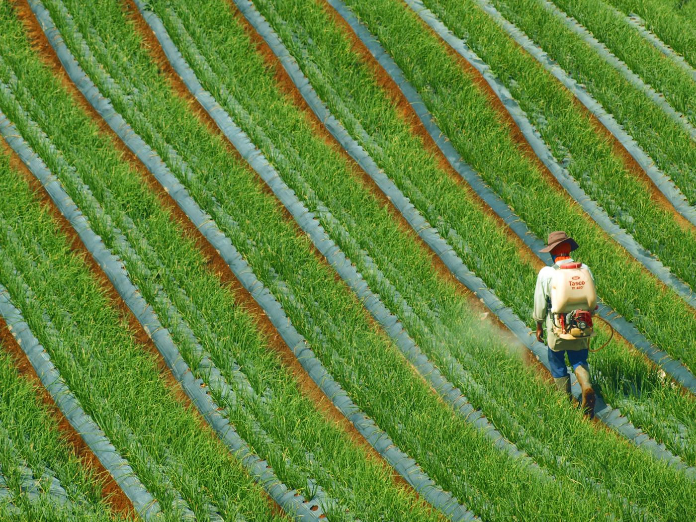
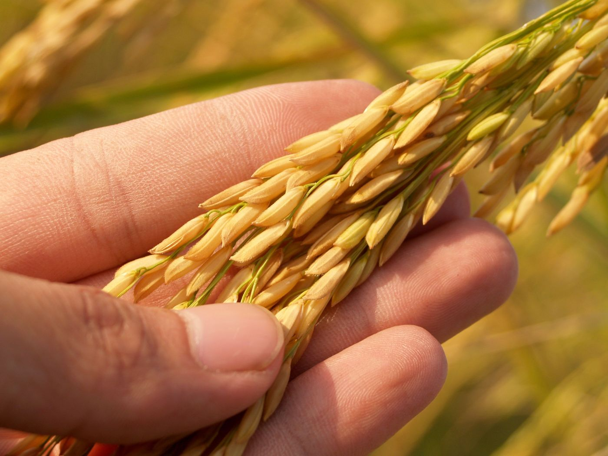
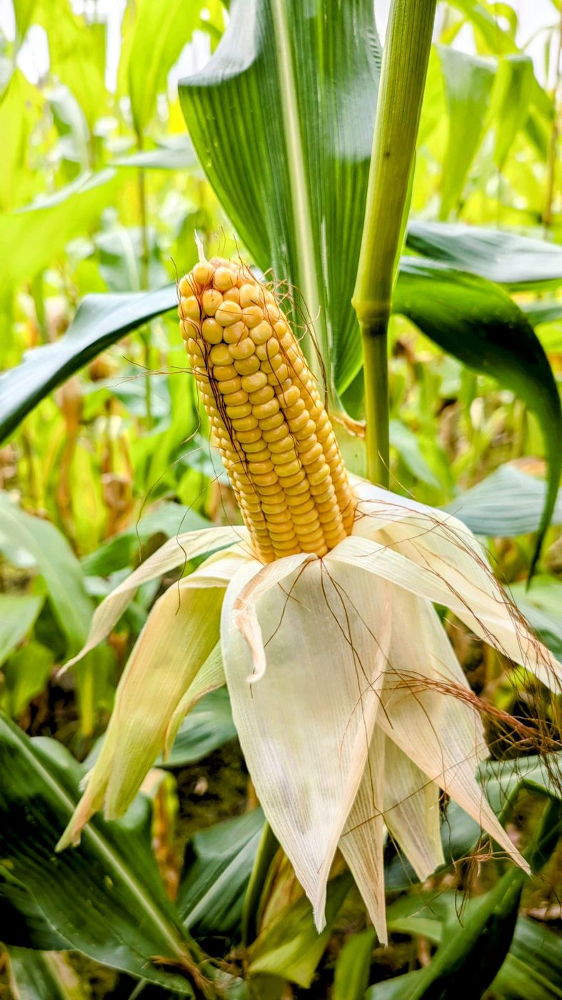

Introduction: Conflict Among People
While walking through any market, you must have come across products labeled non-GMO or organic, or heard opinions about genetically modified foods. Some people think GMOs are an innovation that can help fight hunger globally, while others believe they might affect health and the environment.
Naturally, this mix of information and misinformation leads to a dominant question: are GMOs safe?
Regarding the debate about GMO safety, researchers have spent decades evaluating their safety, benefits, and potential risks. This article looks at the real evidence, along with the pros and cons of GMO foods.
What Are GMOs, and Why Do They Exist?

In the simplest terms, a GMO is any animal, plant, or microorganism whose DNA has been deliberately changed to introduce a new trait. This is done through genetic engineering — adding, removing, or altering specific genes.
Why do GMOs exist in the first place? The short answer: to solve real-world agricultural and nutritional challenges, particularly around food security.
Through genetic engineering, scientists have developed crops that protect themselves from insects, and staples like Golden Rice, engineered to contain more vitamin A, directly targeting vitamin A deficiency in vulnerable populations — as outlined by the World Health Organization.
Are GMOs Safe? What the Science Says
The biggest concerning question is: are GMOs safe for human consumption? Based on current evidence, the short answer is yes — GMOs undergo scientific safety review before they're allowed to reach the market.
A comprehensive report by the National Academies of Sciences, Engineering, and Medicine concluded that genetically engineered crops currently available in markets have not been shown to pose higher risks to human health compared with conventionally bred crops.
Similarly, the World Health Organization states that GM foods currently on the international market have passed safety assessments and are not likely to present risks to human health.
Beyond safety, scientists also study the benefits of GMOs — which is why genetic engineering continues to be explored as one of several strategies to improve food security in a world facing climate change, resource limitations, and growing food demand.
Myths vs. Facts
Genetically modified foods have been surrounded by misconceptions despite decades of research. Most come from misunderstandings about how genetic modification actually works, rather than from scientific evidence.
Myth 1: "GMOs will change your DNA"
Eating GMOs does not alter your own DNA. All the food you eat — genetically modified or not — contains DNA, and it's broken down into small units during normal digestion, just like any other food.
Myth 2: "GMOs cause health problems"
A common misconception is that GMOs cause disease. In reality, organizations like the European Food Safety Authority (EFSA) conduct detailed risk assessments before any GMO product is approved, including evaluations of potential toxicity and allergenicity.
Myth 3: "Natural foods are always safer"
Another common belief is that anything "natural" is automatically healthier or safer. But safety depends on scientific evaluation, not origin. Many natural products can be harmful because they never undergo rigorous testing, while GM foods are released only after formal evaluation.
What Are the Pros and Cons of GMO Foods?
Discussions often focus only on risk. Understanding the real pros and cons of GMO foods gives a more balanced picture than treating them as entirely good or entirely harmful.

Pros of GMO foods
One of the biggest benefits is improved crop protection — crops engineered to resist insects reduce crop losses, and some are designed to tolerate drought and harsh growing conditions, which matters more as climate change intensifies. Golden Rice, mentioned earlier, was designed specifically to address vitamin A deficiency. Innovations like these continue to be explored as part of broader strategies to improve food security as the global population grows.
Cons of GMO foods
Despite the benefits, GMOs aren't without real challenges. There's a possibility of gene flow to wild plant populations, and open questions remain about the long-term impact of certain farming practices on biodiversity. There are also genuine economic and ethical debates around patents and farmers' access to the technology.
Frequently Asked Questions
1. What are some GMO examples?
Bt Corn — produces a natural protein from the bacterium Bacillus thuringiensis that protects the plant from insects, reducing the need for external pesticide use.

Insulin-producing bacteria — GMOs aren't limited to crops. In biotechnology and medicine, genetically modified bacteria are used to produce human insulin.
Soybeans — many genetically modified soybean varieties are designed to tolerate specific herbicides.
2. Why are GMO foods still controversial if scientific organizations consider them safe?
Public debate often extends beyond safety data into environmental concerns, ethical questions, and consumer choice. While the science says they're safe for consumption, social and economic factors still shape public opinion.
3. Can GMOs help address global food security?
GMOs alone can't solve global hunger, but they can be part of the solution. Combined with other innovative farming practices, they offer one real strategy among several for improving food security.
Conclusion
The question "are GMOs safe?" shouldn't be answered based on assumption — it requires looking at the actual scientific evidence. GMOs aren't a perfect solution to agricultural challenges, but they can play a meaningful part in addressing them. Next time you spot a "non-GMO" label at the market, you'll know both what the science says, and where it stops.